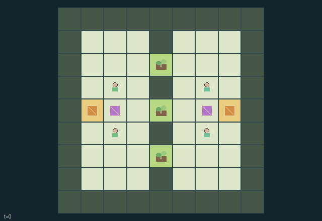

GI111 · Counter-Signal Garden: Relay, Guard and Disrupt

Original recording scope: 角色视角 · Mode: 固定脚本演示
Additional generated state replay (different trajectory / full-state debug)

Score by uncontested live signal coverage of an owned plot. Team reward is own minus opponent step points divided by four, less each actor non-wait cost 1/128.
Identity and original contract
4 independently actionable roles; 10 discrete commands per role; 146 native observation columns per role; original horizon 80 steps. Declared per-step reward range: -1 to 1. Observation regime: partially_observable.
Source SHA-256: 0b28fc38d89bddbf15e2acd499d1803733f583a42634a8e19828a71f042eef36
The objective, rewards, population, map and horizon remain original. A preview is not a success claim.
Objective and gameplay
Score by uncontested live signal coverage of an owned plot. Team reward is own minus opponent step points divided by four, less each actor non-wait cost 1/128.
One mobile relay per team must be carried, pulsed, guarded, jammed or returned to recharge. Guarding blocks opposing drain and extends a new pulse; pickup can remove a teammate access to the same relay. Competing signals change control and scoring.
- Agents 0/1 share team 0 and agents 2/3 share team 1; each team has one relay with four battery units.
- Pick up a relay to relocate it. A held relay can be pulsed only by its holder; a ground relay can be pulsed by an adjacent teammate.
- A pulse spends one battery and lasts three transitions at its emitted location. Moving its relay does not move an existing pulse.
- Guarding within one square blocks all simultaneous jamming of that relay and extends a new pulse radius from three to four.
- Each unblocked enemy jam within two squares drains one charge and one remaining signal tick before any new pulse.
- Unopposed signal pressure changes plot control toward its team. At +2 or -2 ownership changes; scoring also requires uncontested live coverage.
- Recharge adds at most one unit per step when both a teammate and its relay are adjacent to the native base.
- Either team reaching 24 points ends the game; otherwise step 80 truncates. Role views respect local sensing and native radio.
Ending: Either team reaches 24 accumulated plot points; otherwise truncate at 80. Simultaneous threshold crossings are possible.
What this game explores
Resource commons & externalities: An action changes a persistent resource or burden that another role also encounters. Compare extraction with maintenance and record the downstream resource trajectory.
Joint transport & shared access: Positions, load geometry, occupancy and persistent access constrain whose action can succeed next. Distinguish physical handoff, shared controls and simultaneous force from a cosmetic cooperation label.
Team opposition & interception: Cooperation within a team can coexist with opposition between teams. Preserve team membership, capture and possession rules, and report each team's outcomes instead of assuming a single shared return.
These are questions supported by rule structure, not observed learning effects.
Play it: operating walkthrough
crucibles play --game gi111Keep Python running and open its printed address. Select this game, set a seed and press Create session. The game itself is always English.
Assign a role range to Host with Assign / take over, or Assign all roles. Invite a second participant with Create player invitation, then assign a disjoint subset. Every original role is available.
For every owned role choose a legal command and press Queue. Arrow keys / WASD queue a declared directional action for the current role camera when available. Space or Advance one joint step advances everyone together. Non-directional games use the selectors.
Unqueued roles use the labelled untrained uniform-legal policy. Take over or release roles before the next step without resetting. Full-state debug is privileged and permanently logged; role cameras preserve permissions. Close the session to retain logs. Server restart does not restore sessions.
Complete command reference
IDs and English labels exactly match the manifest. Availability depends on role, resources, location and phase. An available action can still have no productive effect.
0·wait
1·move north
2·move east
3·move south
4·move west
5·pulse own usable relay
6·pick up or drop own relay
7·jam nearby enemy relay
8·guard own nearby relay
9·recharge own relay at its base
Roles and capability identifiers
These original role names describe capabilities, not interchangeable skins. Check each owned role's legal selector before planning handoffs.
agent_0·team 0 mobile relay operator or guard
agent_1·team 0 mobile relay operator or guard
agent_2·team 1 mobile relay operator or guard
agent_3·team 1 mobile relay operator or guard
Information and observation permissions
Public static map, IDs/team mapping, clock and team totals. Agent and plot details are local L1 radius 3. Native relay/signal telemetry is global to its own team; enemy telemetry is local radius 3. All hidden payloads zero with explicit visible flags. Events publish only total points.
The GIF is full-state debug and may reveal hidden entities or private state. Train on obs[agent], not the picture, state tree or another role's private row. Field slices and visibility are in the original manifest.
Reinforcement-learning integration
import jax
from crucibles_jaxmarl import make
env = make("gi111")
key = jax.random.PRNGKey(0)
key, rk, ak, sk = jax.random.split(key, 4)
obs, state = jax.jit(env.reset)(rk)
actions = env.sample_actions(ak, state)
obs, state, rewards, dones, info = jax.jit(env.step_env)(sk, state, actions)
done = dones["__all__"]Observations are float32 vectors of width 146; actions are scalar int32; masks have 10 entries. Supply all 4 roles each transition. Masked sampling is an engineering reference, not a trained learner.
step_env retains terminal data without reset. step performs outer autoreset and keeps terminal data in info["raw_state"] and info["raw_observation"]. Use dones["__all__"] for episode boundaries; separate completion, failure and time limit in analysis.
JIT or vmap equal identities and shapes. Split independent reset, policy and transition keys. Group different shapes explicitly; do not shrink the population or horizon. Host rendering stays outside training.
Training questions and fair evaluation
Define valid completion from the objective before fitting. Preserve original rewards and also report real deliveries/services, losses, resource state, unresolved episodes and per-role returns. Animation is not a reward signal.
An action changes a persistent resource or burden that another role also encounters. Compare extraction with maintenance and record the downstream resource trajectory.
Positions, load geometry, occupancy and persistent access constrain whose action can succeed next. Distinguish physical handoff, shared controls and simultaneous force from a cosmetic cooperation label.
Cooperation within a team can coexist with opposition between teams. Preserve team membership, capture and possession rules, and report each team's outcomes instead of assuming a single shared return.
Compare memory, communication or centralized critics under matched actor information. Declare critic access; keep actor inputs role-filtered. Match partner/opponent distributions, masks, compute and checkpoint selection. Final tests never enter fitting or selection.
Independent training runs or source-pairing blocks are inferential units; episodes from one policy are not independent training replications. Save hashes, keys, versions, device, time and cost. Negative, zero, failed and indeterminate outcomes are valid. No trained checkpoint or target score is supplied.
Classification and evidence
Overlapping editorial labels are reading aids, not proof of novelty, difficulty, strategic equivalence or learning effects.
- Resource commons & externalities
- Evidence
manifest.task.objective: Score by uncontested live signal coverage of an owned plot. Team reward is own minus opponent step points divided by four, less each actor non-wait cost 1/128.
- Joint transport & shared access
- Evidence
manifest.task.interaction: One mobile relay per team must be carried, pulsed, guarded, jammed or returned to recharge. Guarding blocks opposing drain and extends a new pulse; pickup can remove a teammate access to the same relay. Competing signals change control and scoring.
- Team opposition & interception
- Evidence
manifest.task.objective: Score by uncontested live signal coverage of an owned plot. Team reward is own minus opponent step points divided by four, less each actor non-wait cost 1/128.
- Evidence
manifest.task.observation_access: Public static map, IDs/team mapping, clock and team totals. Agent and plot details are local L1 radius 3. Native relay/signal telemetry is global to its own team; enemy telemetry is local radius 3. All hidden payloads zero with explicit visible flags. Events publish only total points.
- Evidence
manifest.actions.7: jam nearby enemy relay
Source, receipts and preview limits
The additional generated state GIF replays saved untrained legal actions through the original kernel. At most 25 actual endpoints include initial and terminal state; no invented interpolation. It is full-state debug, not the role observation. Where an original scene preview exists, it is displayed first with its own recorded information scope. The two recordings may use different trajectories and views.
Original source, observation slices, manifest and mechanism
Native receipt · Presentation receipt
Engineering passes do not establish learning. Nonzero floating differences remain recorded and undetermined; no new tolerance was introduced. Human scores remain unverified.